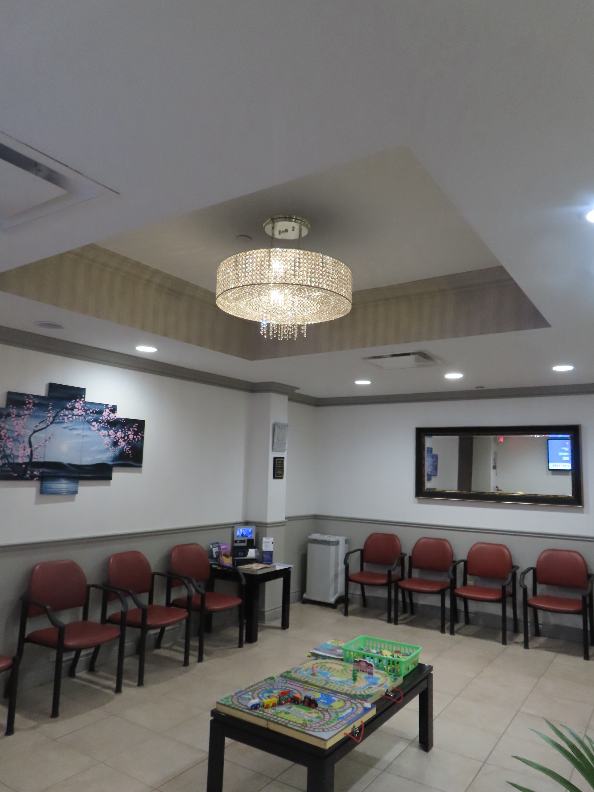

Sleep disorders affect tens of millions of Americans, yet the majority go undiagnosed for years. For patients in Oakland and Macomb Counties, Dr. Michel Alkhalil and the team at Troy Sleep Center offer a clear, evidence-based path from symptom to diagnosis to treatment — in an AASM-accredited facility designed specifically for this work.
Sleep is not a passive state. Every night, the body cycles through carefully orchestrated stages of light sleep, deep sleep, and REM — each serving a distinct restorative function. When a disorder disrupts that architecture, the consequences extend far beyond tiredness. Untreated sleep conditions are associated with elevated cardiovascular risk, impaired cognitive function, metabolic dysregulation, and diminished immune response. Understanding what's happening — and why — is the first step toward doing something about it.
The Most Common Sleep Disorders
Obstructive sleep apnea (OSA) is among the most prevalent and most underdiagnosed sleep conditions in the country. It occurs when the upper airway partially or fully collapses during sleep, causing repeated pauses in breathing. Partners often notice it first — as loud snoring followed by silence, then a gasp. But many OSA patients sleep alone and have no idea what's happening during those hours. Daytime fatigue, morning headaches, difficulty concentrating, and mood changes are the signals that eventually bring patients in.
Insomnia — chronic difficulty falling or staying asleep — affects up to a third of adults at some point. Acute insomnia often has an identifiable trigger: stress, illness, a change in environment. Chronic insomnia is more complex. It frequently involves conditioned hyperarousal, where the brain begins associating the bed with wakefulness rather than rest. Treatment requires a structured, behavioral approach — not simply a prescription for a sedative. Dr. Alkhalil and his team evaluate both the causes and the maintenance factors keeping the insomnia cycle active.
How Sleep Medicine Diagnosis Actually Works
The diagnostic process at an AASM-accredited facility like Troy Sleep Center is more rigorous than a general practitioner's referral to a home sleep test alone. It begins with a detailed clinical history: sleep patterns, daytime functioning, medical and psychiatric history, medications, and the specific nature of the complaint. From there, the appropriate diagnostic tool is selected.
An in-laboratory polysomnogram (PSG) remains the gold standard for complex cases. It simultaneously records brain activity, eye movements, muscle tone, heart rhythm, oxygen saturation, airflow, and respiratory effort — producing a comprehensive picture of what the body is doing across an entire sleep period. For straightforward OSA screening, a home sleep apnea test (HSAT) may be appropriate. The clinical judgment about which test to use, and how to interpret the results, requires a board-certified sleep physician.
Treatment: Beyond the CPAP Default
CPAP (continuous positive airway pressure) therapy remains the first-line treatment for moderate to severe obstructive sleep apnea, and when tolerated and used consistently, it's highly effective. But it isn't the only option — and for patients who can't adapt to CPAP, it's important to know that alternatives exist. Read more about the full range of sleep apnea treatment options beyond CPAP, including oral appliance therapy, positional therapy, upper airway surgery, and the newer hypoglossal nerve stimulation approach.
For insomnia, cognitive behavioral therapy for insomnia (CBT-I) is now the recommended first-line treatment ahead of medication. It works by restructuring the beliefs and behaviors that perpetuate sleeplessness — and its effects are durable in a way that sedative medications aren't. Alkhalil's practice incorporates behavioral approaches alongside pharmacological options when clinically appropriate.
The Allergy-Sleep Connection
One aspect of sleep medicine that is frequently overlooked by practitioners who don't hold dual board certification is the relationship between allergic disease and sleep disruption. Allergic rhinitis — chronic nasal inflammation — increases airway resistance and promotes mouth breathing during sleep, two conditions that directly worsen sleep apnea severity. Poorly controlled asthma causes nocturnal awakening and oxygen desaturation. Chronic sinusitis produces pressure headaches that interrupt sleep architecture.
Dr. Michel Alkhalil's training in both sleep medicine and allergy/immunology allows him to evaluate and treat these interconnected conditions together, rather than sending patients through multiple specialty referrals before anyone looks at the full picture. It's one of the practical advantages of the integrated care model at AAIRS Clinic in Troy, Michigan.
Conclusion
Sleep disorders are medical conditions — not character flaws, not simply the cost of a busy life. They are diagnosable, treatable, and life-changing to address. If you or someone you know is experiencing persistent sleep problems in the Oakland or Macomb County area, an evaluation at an AASM-accredited center is the right first step. Reach out to Dr. Alkhalil's team through the contact page to learn what that process looks like.